At the crossroads of data
Presenting the CAMOTECCER relational database of archaeological ceramics from Central AsiaAndreas Angourakis, Verónica Martínez Ferreras, Josep M. Gurt, Enrique Ariño Gil, Shakir R. Pidaev Session #312 - Ancient pottery in Central Asia: large scale perspective on the production systems and the cultural interactions
available at https://andros-spica.github.io/EAA2018_ceramics/https://andros-spica.github.io/EAA2018_ceramics/index.html?print-pdf (printable version)

 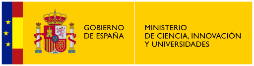
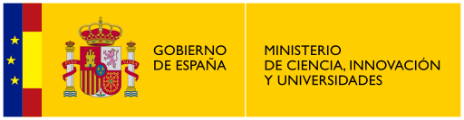


Context
(2013-17),
CERAC project
(2017-20)
Archaeological and archaeometric study on ceramic production in Surkhan Darya region, southern Uzbekistan.
Goals


Areas of development:
- Historical and ethnographic research
- Definition of a theoretical model for (non-industrial) pottery production(→ data base design)
- Archaeometric characterisation of archaeological pottery
- Geological characterisation of the region (raw materials)
- Experimentation regarding the properties and the functional capabilities of ceramic containers
- Formalisation of the theoretical model
Why
Integrate results of many different archaeometric techniques on ceramics
Concerns
- centralize data management
- standardise qualitative data
- facilitate new entries
- export data sets (.csv) for statistical analysis
What
- relational database
- combines archaeological and archaeometric data
- more than 700 ceramic individuals
- sites in the Surkhan Darya region, Uzbekistan
- Hellenistic to Islamic period
- + over 200 wine Roman amphorae from Catalonia (generality test)
Tables and relationships

Tables > Individual
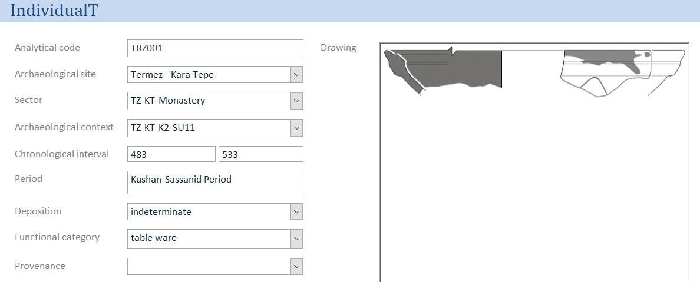Gathers the basic information on ceramic individuals
Links them to the archaeological and archaeometric data
Tables > Context

Stratigraphic unit related to individuals
Relates to a site and (optionally) to a site sector
Dated numerically and/or linked to a period
Variables regarding inferred function
Tables > Site
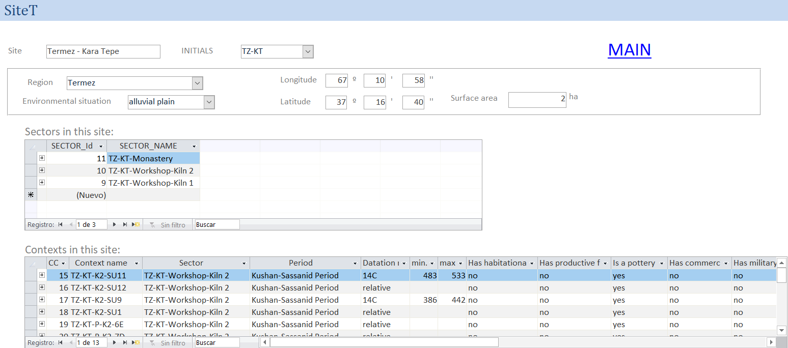Site name and initials
Geographical coordinates and parent unit ("region")
Environmetal situation and surface area
Tables > SubDivision

Recursive structure of geographical units
e.g., Termez → Bas Surkhan → South Surkhan Darya region → Surkhan Darya region → Uzbekistan
Stride, S. (2005). Géographie archéologique de la province du Surkhan Darya (Ouzbékistan du sud / Bactriane du nord). Ph.D thesis, Université Paris I Panthéon-Sorbonne.
Tables > Chem
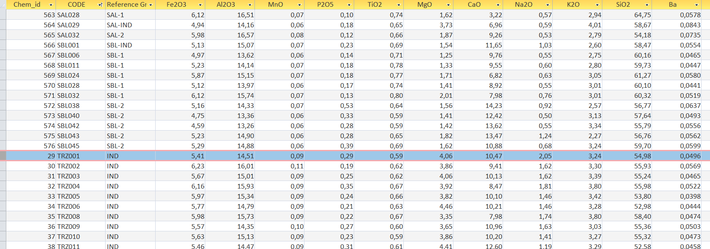Geochemical data (XRF)
+ reference group (if determined)
Tables > Chem reference group
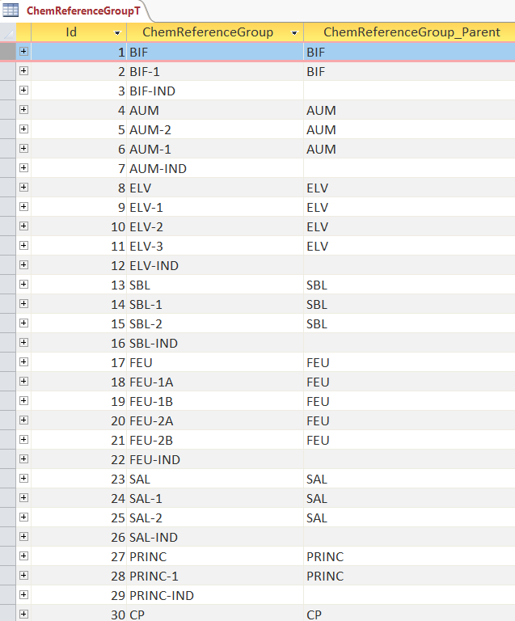Tables > Petro
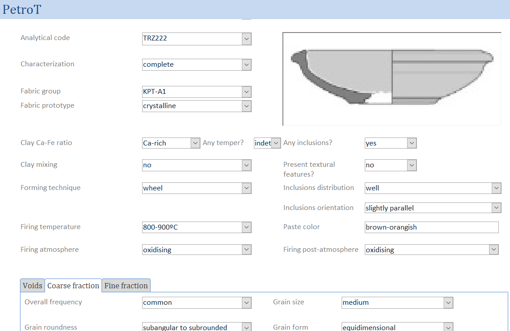Petrographic qualitative data (thin section optical microscopy)
+ firing temperature (inferred from X-ray diffraction)
+ fabric group (if determined)
Whitbread, I.K. (1995). Greek transport amphorae: a petrological and archaeological study, British School at Athens, Fitch Laboratory Occasional Paper 4, Athens.
Tables > Petro > Voids
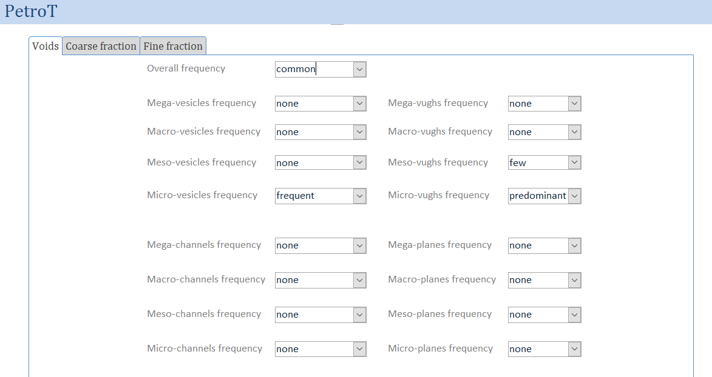
Frequency and frequency per type of
size (micro to mega) and
shape (vesicles, vughs, channels, planes)
Tables > Petro > Coarse fraction
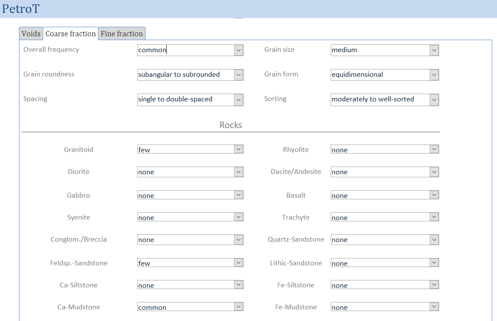General characteristics + Frequency per type of rock and crystal
Tables > Petro > Fine fraction
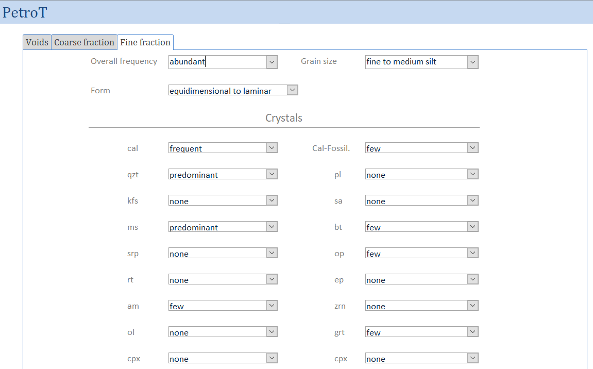General characteristics + Frequency per type of crystal
Tables > Fabric group

Tables > Surface

General properties + decoration, finishing and coating
Tables > Shape
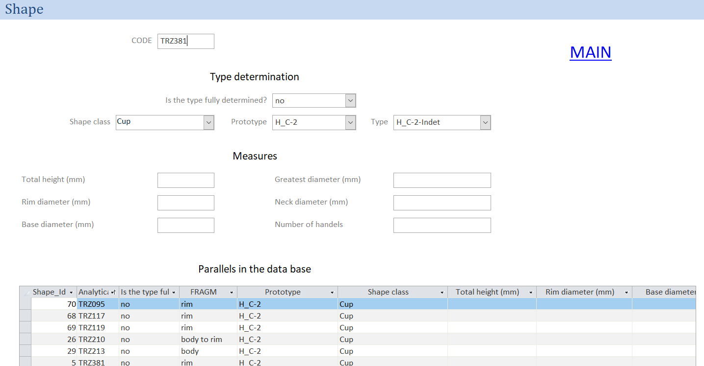Typology and measurements
Tables > Shape class
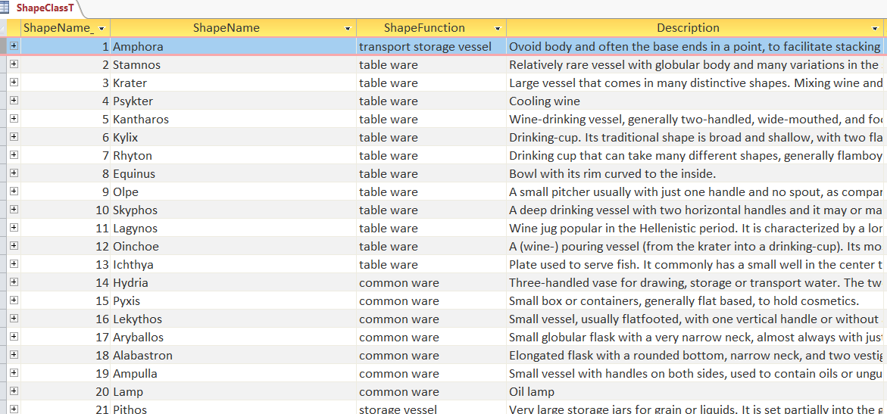Name, functional category and description
Application
Integrative multivariate statistical analysis
We defined four protocols for analysing geochemical and petrographic data:
Angourakis, A., Martínez Ferreras, V., Torrano, A. and Gurt Esparraguera, J.M. (2018). Presenting multivariate statistical protocols in R using Romanwine amphorae productions in Catalonia, Spain. Journal of Archaeological Science, 93: 150-165. https://doi.org/10.1016/j.jas.2018.03.007
Data in Surface and Shape tables still need to be addressed.
Example
45 tableware individuals from 4 sites:- Kampyr Tepe, Hellenistic period (KPT)
- Termez - Tchingiz Tepe, Yuezhi to Kushan-Sassanid period (TT)
- Termez - Kara Tepe, Kushan-Sassanid period (KT)
- Termez - Ancient Quarters, Islamic period (ISL)
Protocol 1: CHEM table
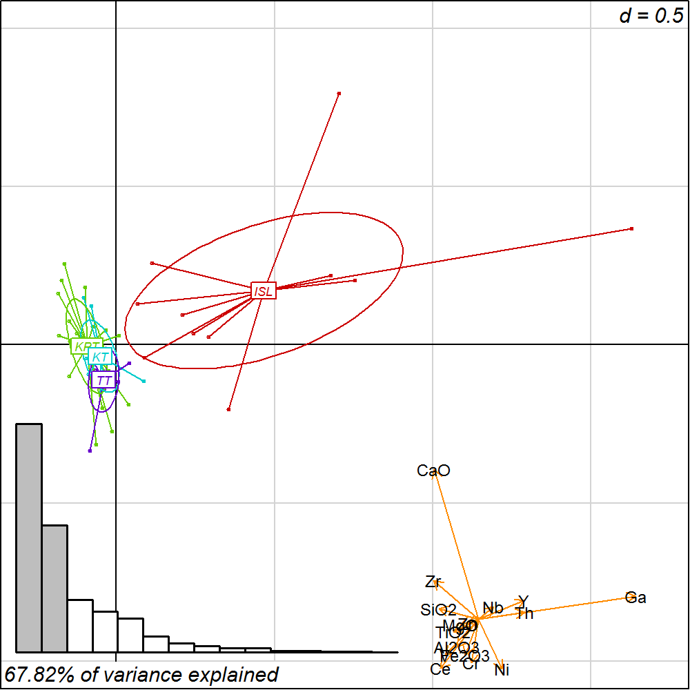Protocol 2: PETRO table
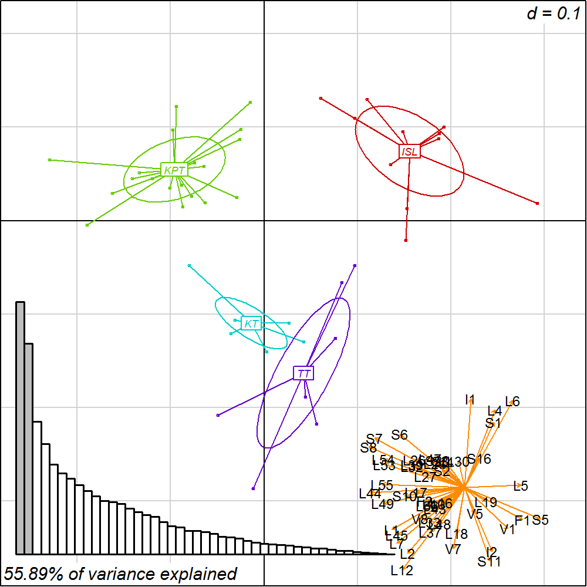Protocol 3: CHEM and PETRO tables
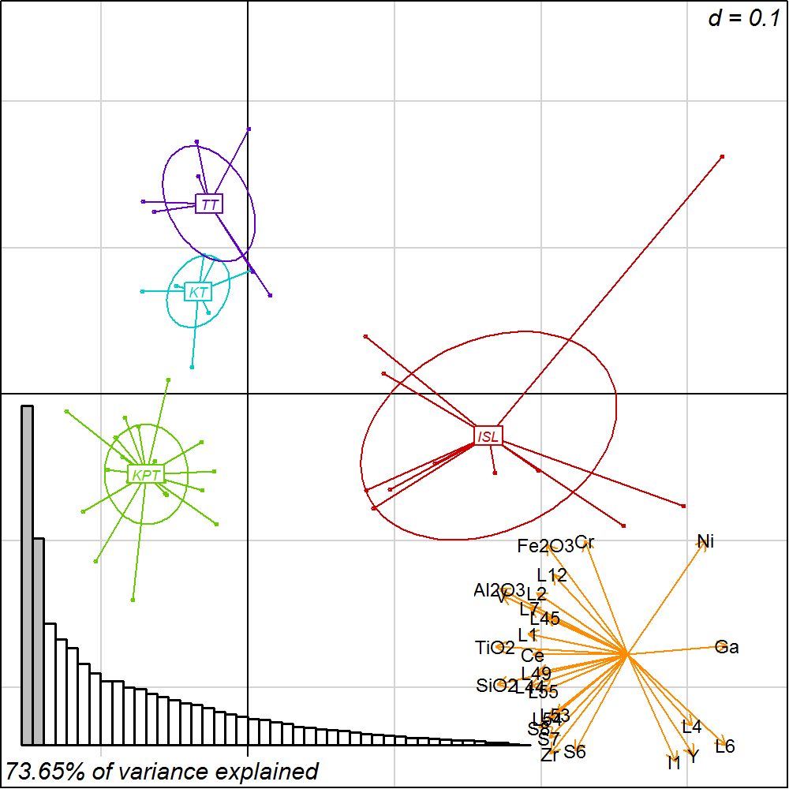Protocol 4: CHEM and selection of PETRO variables
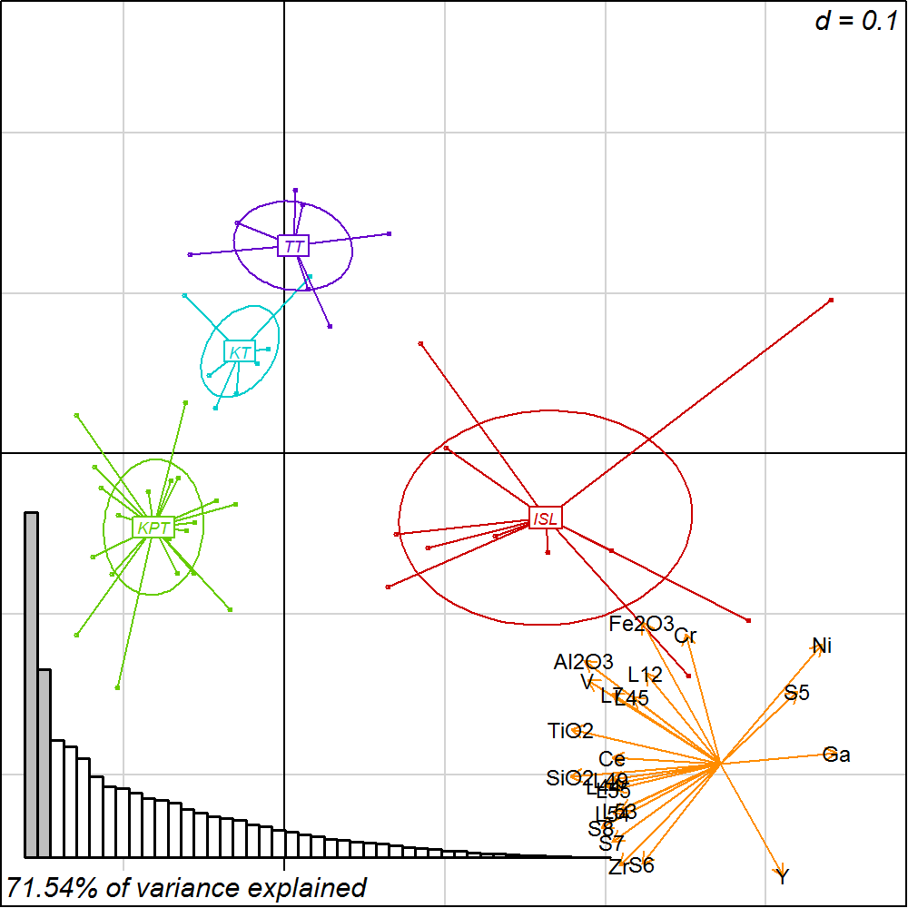
Projects funding
Characterization and modeling of technological processes in the manufacture of ceramics from ancient societies in Central Asia. From Hellenism to Islam (CAMOTECCER), HAR2012-32653, funded by Ministerio de Economía y Empresa, Secretaría de Estado de Investigación, Desarrollo e Innovación (Ayudas para la realización de proyectos de investigación, Subprograma de proyectos de investigación fundamental no orientada).Las sociedades antiguas complejas de Asia Central a través de la cerámica. Entre la tradición nómada y las influencias mediterráneas (CERAC), HAR2016-75133-C3-1-P, (subprojetcs: Caracterización arqueométrica de cerámicas de Asia Central: Patrones tecnológicos, interacción y evolución cultural [CATECCER], HAR2016-75133-C3-3-1-P, and Centros de producción cerámica y centros de consumo en Asia Central: Contextualización arqueológica [CONCERAC], HAR2016-75133-C3-3-P), funded by the Ministerio de Ciencia, Innovación y Universidades (Plan Estatal de Investigación Científica y Técnica y de Innovación 2013-2016).
Termez en Bactriana, Fundación Palarq. Paleoantropología y Arqueología. Convocatoria del año 2017.
At the crossroads of data
Presenting the CAMOTECCER relational database of archaeological ceramics from Central AsiaAndreas Angourakis, Verónica Martínez Ferreras, Josep M. Gurt, Enrique Ariño Gil, Shakir R. Pidaev
THANK YOU!
address any questions to A. Angourakis: andros.spica@gmail.com